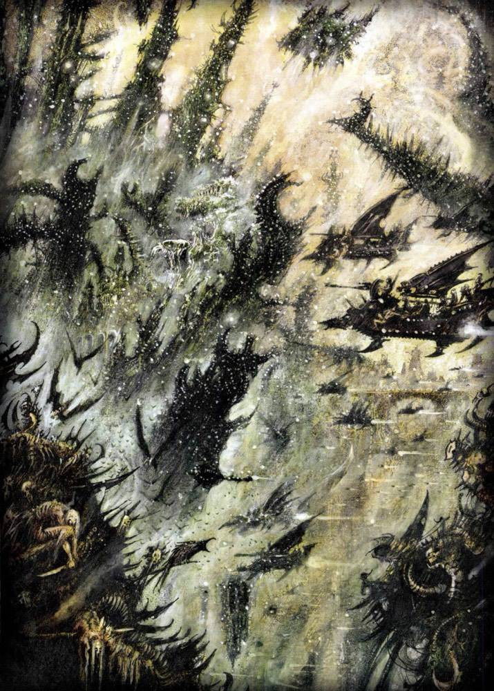

Drukhari
| Drukhari The Dark Kin | |
|---|---|
Glyph of the Drukhari, as recorded by the Ordo Xenos | |
| Classification | Xenos; a kindred of the Aeldari |
| Capital | Commorragh, in the Webway |
| Origin | The pleasure cults of the Aeldari Empire, before the Fall of the Aeldari (c. M30) |
| Supreme Overlord | Asdrubael Vect, Archon of the Kabal of the Black Heart (since c. 984.M35)[a] |
| Factions | Kabals, Wych Cults, Haemonculus Covens, the Incubi |
| Sustenance | The suffering of others, which holds back the soul-thirst of Slaanesh |
| Status | Active; realspace raids greatly increased in the Era Indomitus |
| Notable figures | |
| Asdrubael Vect; Lelith Hesperax; Urien Rakarth; Drazhar; Duke Sliscus; Yvraine (formerly) | |
The Drukhari, called in older Imperial records the Dark Eldar and by their own kin the Dark Kin, are a kindred of the Aeldari who live in the hidden city of Commorragh, deep within the Webway. They are the descendants of the pleasure cults that dominated the Aeldari Empire in its last age, and of the factions who fled into the Webway before the Fall of the Aeldari in the 30th millennium. Like all Aeldari their souls are hunted by Slaanesh, the power their ancestors brought into being, but unlike the Asuryani of the craftworlds they do not resist it by discipline. They stave off the slow draining of their souls by feeding on the pain and terror of others.[1][2]
For the Imperium the Drukhari are a scourge without territory. Their raiding parties fall on worlds without warning through Webway portals, take slaves and captives, and vanish before a defence can be organised. Their society is ruled by the Kabals of the nobility, the gladiatorial Wych Cults and the flesh-sculpting Haemonculus Covens, held together by fear of one figure: Asdrubael Vect, Supreme Overlord of Commorragh.[1]
Since 999.M41 the Dark City has been divided by the rise of the Ynnari, whose prophet Yvraine was a gladiator of its arenas, and by the opening of the Great Rift, which has offered the Drukhari more prey than at any time in recorded history.[3]
Origins
[edit]The pleasure cults
[edit]Aeldari and Imperial sources agree that in its last millennia the Aeldari Empire turned inward. Freed from want by its technology, its people pursued sensation, and cults devoted to ever more extreme experience came to dominate its worlds. Some of the most powerful and least restrained of these cults had their seats in the port cities of the Webway, beyond the reach of the realspace authorities. Commorragh was the greatest of those ports, and its nobles, already notorious for their excesses, began to move their households there.[1]
The Fall
[edit]The excesses of the empire gave birth to Slaanesh at the event the Aeldari call the Fall, which Imperial chronologists place in the early 30th millennium.[b] The psychic shock killed most of the Aeldari race and tore open the Eye of Terror. Commorragh, sealed within the Webway, survived. Its inhabitants were not spared the curse that fell on every Aeldari soul, but they were spared the immediate death that took their realspace kin. The Drukhari came to believe that by inflicting suffering they could feed their souls in place of the god, and so delay the moment when Slaanesh would claim them.[1][4]
History
[edit]The rule of the Kabals
[edit]In the millennia after the Fall, the city was ruled by its old noble houses. Asdrubael Vect, according to his own propaganda a slave born in the lowest districts, founded the Kabal of the Black Heart and in a series of wars broke the noble houses and their satellite realms. Harlequin records place his final seizure of power about 984.M35. Commorragh has since been ruled by the Kabals, of which the Black Heart is the greatest, and Vect has survived uncounted assassination attempts.[1][5]
Raids on the Imperium
[edit]Imperial records note Drukhari raids from the earliest centuries of the Imperium, though they were seldom recognised for what they were. Among the incidents recorded by the Inquisition are the destruction of the hive world Auxilion in 156.M35, the war over the Thaxar Rift in 745.M35 and the raid on Fenris in 616.M39 that set a war band of Space Wolves hunting through the Webway. Throughout the 41st millennium the frequency of raids rose steadily. The Ordo Xenos holds that a world struck by the Drukhari loses, on average, a greater share of its population than one struck by any other xenos raider, because the attackers take captives rather than kill.[2][1]
The Dysjunction
[edit]In the late 41st millennium Commorragh suffered the Dysjunction, when a breach in its defences let daemons pour into the Dark City. Whole districts fell before the Kabals and Covens drove them out. Vect is believed to have engineered or at least permitted the catastrophe to destroy rivals who had grown too strong.[1][c]
The Night of Revelations
[edit]In 999.M41, in the arena of the Crucibael, the Succubus Yvraine was struck by a fragment of the newly stirring god Ynnead at the moment of her death. The psychic shock opened a breach in the Webway, daemons broke into the city, and Yvraine escaped to found the Ynnari. The event, called the Night of Revelations, shook Vect's hold on the city. He has since waged a secret war against pro-Ynnari factions within Commorragh and set a bounty on Yvraine's head.[6]
Era Indomitus
[edit]Vect's agents have tried more than once to kill the prophet. On the world Ghodri Sekmet the Haemonculi of the Prophets of Flesh, at Vect's request, reshaped Drukhari transgressors into the likeness of humans and planted them in the ranks of the Astra Militarum, so that an Imperial assault would trap Yvraine against a Drukhari strike force at the Webway gate. The Ynnari were cut to pieces, and only the manifestation of the Yncarne allowed Yvraine to escape. Several sub-realms of Commorragh have nevertheless passed under Ynnari control.[6]
The Great Rift has made raids far easier. Imperial worlds cut off from Terra and from each other cannot call for help, and Drukhari raiders have been reported on both sides of the Rift. Some Imperial commanders of the Indomitus Crusade have accepted the help of Drukhari mercenaries against common enemies, a practice the Ordo Xenos condemns.[3]
Commorragh
[edit]
Commorragh, the Dark City, lies in its own pocket of the Webway. It is the largest city in the galaxy known to the Imperium, and it is in effect a realm of many cities bound together. Its light comes from stolen suns, the Ilmaea, captured from realspace and chained in place, and it grows as its rulers steal or annex the Webway's lesser realms.[1][4]
The city has three broad divisions. High Commorragh is the realm of the great spires, where the Kabals keep their fortresses and where Vect's Corespur rises above the rest. Low Commorragh, the Sprawl, is a vast tangle of slums, slave pens and markets. Below lie the domains of the Haemonculi, the dwellers beneath, whose laboratories reach deep under the city. The Wych Cults hold arenas throughout the city, the greatest of which are attended by tens of thousands.[4]
Around the core are the satellite realms, pockets of the Webway joined to the city: among them the Shaa-dom, whose rulers once rivalled Vect, and Aelindrach, the realm of shadow from which the Mandrakes come. Khaine's Gate, a great sealed portal, is said to open onto the deep Webway; it was opened in the city's darkest hours to admit outside aid.[4]
Vect's rule is the closest thing the city has to law. Any Drukhari may in principle rise to power by murder or by cunning, and the city's politics are a constant, lethal contest between Kabals.[1]
Society
[edit]
Kabals
[edit]The Kabals are noble war bands, each led by an Archon who rules by fear and patronage. Their warriors, the Kabalites, form the backbone of most raids and fight with splinter weapons that fire shards of poisoned crystal. Trueborn, the Drukhari born naturally rather than grown in vats, look down on the Halfborn, and the distinction shapes every Kabal.[1]
Wych Cults
[edit]The Wych Cults are gladiatorial societies led by Succubi, who fight in the arenas for the entertainment of the city and on raids for the thrill of the hunt. The most famous of them, Lelith Hesperax of the Cult of Strife, is reckoned the greatest blade-fighter in Commorragh. The Cults also field the Hellions and Reavers, who ride skyboards and jetbikes.[1]
Haemonculus Covens
[edit]The Haemonculi are masters of flesh. They rebuild the bodies of the dead for a price, which lets the wealthy of Commorragh live, in practice, for ever, and they shape monsters from living tissue. The oldest of them, Urien Rakarth, is believed to have died and been rebuilt more often than any other being in the city.[1][2]
Incubi and others
[edit]The Incubi are a warrior order of mercenaries who serve whoever pays; their greatest champion is Drazhar, Master of Blades. The Harlequins move freely in Commorragh and perform there, and some Drukhari fight alongside them. Mandrakes, Scourges, Beastmasters and the war engines of the Haemonculi complete the forces of a raid.[1]
Way of war
[edit]The Drukhari fight to take captives, not to hold ground. A raid arrives through a portal, strikes with speed, overwhelms its target with grav-craft such as the Raider and the Venom, and withdraws with its prisoners before the defenders can respond. Captives are taken back to Commorragh as slaves, as fodder for the arenas, or as raw material for the Haemonculi. Drukhari warriors grow stronger as they fight, because the suffering they inflict revives them.[1][7]
The Departmento Munitorum's standing advice to garrisons is to deny the raiders surprise: to watch for unexplained disappearances, to fortify likely portal sites, and to fight at night under arms.[8]
Relations with other Aeldari
[edit]The craftworld Aeldari regard the Drukhari as kin who chose damnation, and the Drukhari regard the craftworlders as cowards who have given up the birthright of their race. The two nevertheless trade, ally and sometimes fight side by side. The Harlequins pass between both. The rise of the Ynnari has blurred the lines further, because the Reborn accept converts from both peoples.[4][6]
Timeline
[edit]| Date | Event |
|---|---|
| Before c. M30 | The pleasure cults gather in Commorragh |
| c. M30 | The Fall of the Aeldari; birth of Slaanesh; Commorragh survives in the Webway |
| 156.M35 | Destruction of the hive world Auxilion |
| c. 984.M35 | Asdrubael Vect seizes power in Commorragh |
| 616.M39 | Raid on Fenris |
| Late M41 | The Dysjunction |
| 999.M41 | The Night of Revelations; Yvraine founds the Ynnari |
| Early M42 | The Ghodri Falsehood; Vect's secret war against the Ynnari |
See also
[edit]Notes
[edit]- ^ Date from Harlequin records held by the Ordo Xenos. Drukhari sources give no consistent figure.
- ^ Imperial scholars estimate the Fall from the formation of the Eye of Terror, recorded at the start of the Age of Strife; Aeldari accounts give no human date.
- ^ The Dysjunction is not dated in Imperial records; Ordo Xenos estimates place it in the last century of the 41st millennium.
References
[edit]- ^ a b c d e f g h i j k l m n Xenos Analytica: The Dark Kin (rev. 990.M41). Ordo Xenos (sealed).
- ^ a b c Eisenhorn, Gregor (c. 300.M41). Memoirs of an Inquisitor. Ordo Xenos (sealed).
- ^ a b Records of the Indomitus Crusade (ongoing). Office of the Lord Commander.
- ^ a b c d e Valeria, Helynna (c. M41). On the Aeldari Kindreds and their Hidden Places. Ordo Xenos (sealed).
- ^ Records of the Laughing God's Players (M41). Ordo Xenos (sealed).
- ^ a b c Greyfax, Katarinya (M42). Report on the Xenos Sect called Ynnari. Ordo Xenos (sealed).
- ^ Lexicanum Martialis. Officio Militaris.
- ^ Imperial Infantryman's Uplifting Primer (rev. 990.M41). Departmento Munitorum.